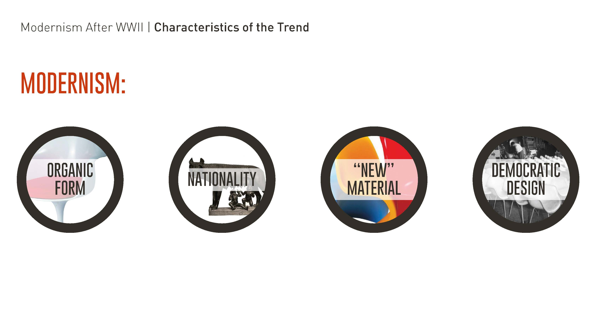
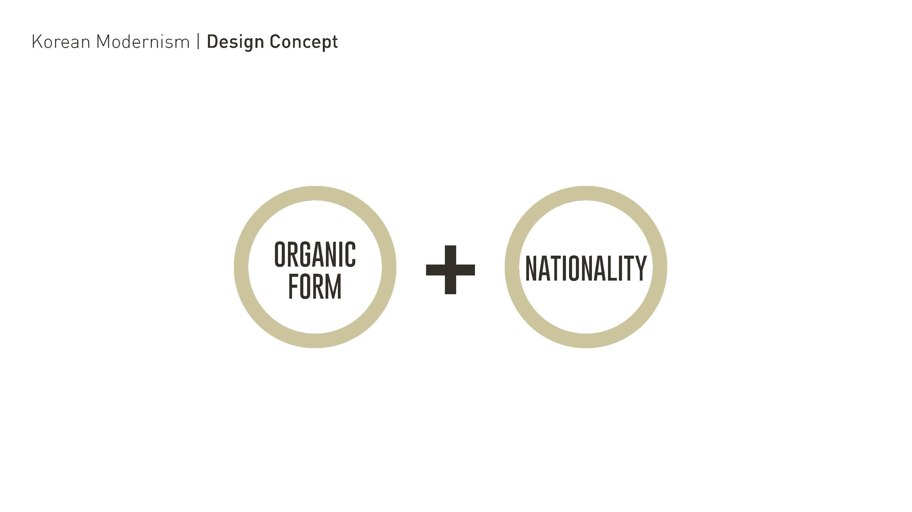
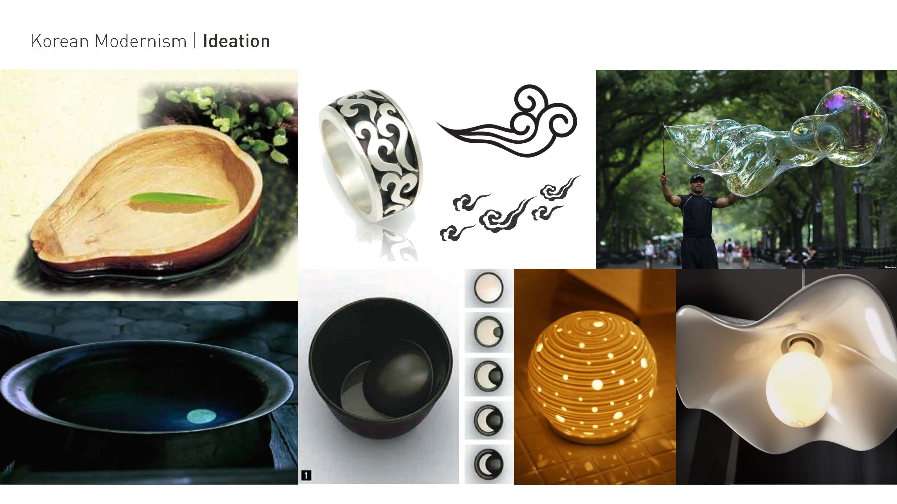
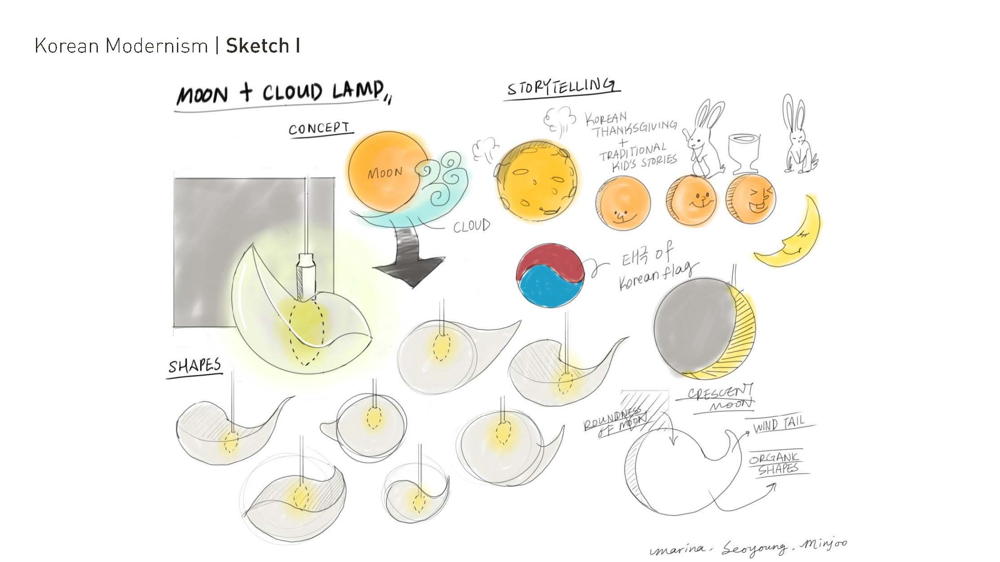
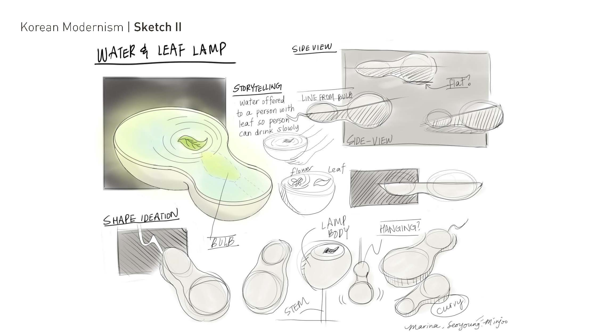

Backgrounds
The aim of this project was to design a lamp inspired by 1950-1960's Modernism Movement in Europe.
We were trying to instill Korean Originality into the Lamp Design with Organic Shape, which was one of the characteristis of Modernism Movement between 1950 to 1960
Inspirations
Based on the main characteristics of Modernism Movement of strongly emphasizing Organic Form of the design and Nationality of a country, the lamps are mostly inspired by Korean traditional images.
 Sketches
Two respresentative images are chosen. A Moon with the clouds passing across and A gourd basket with a leaf on ,all of which represent calm and peacefulness in Asian Context.
  Renderings
Rendering Images of Two types of lamps.
3D Modeled with Autodesk Inventor / Rendered with Keyshot
Lamps are modeled in halves for easy assembly.
Final Products
Modeled files are printed with 3D printer by Ultimaker, then assembled with the LED lamps.